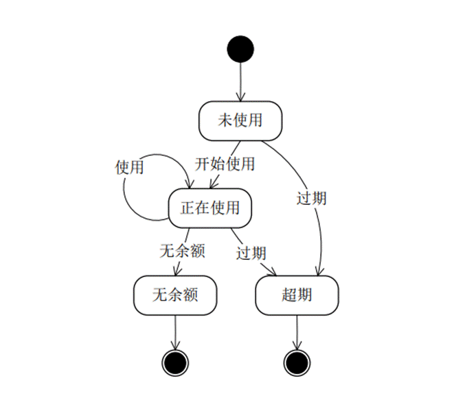

软件工程，从复习到挂科
目录
软件工程，从复习到挂科目录软件工程与UML-题库第一章 软件工程概述填空题选择题判断题第二章 软件开发过程填空题选择题判断题第三章 需求分析（用例图+活动图）填空题选择题判断题第四章 概要设计（类图+顺序图+协作图）选择题填空题判断题第五章 代码生成之道 （类的关系+包图+组件图+部署图）填空题选择题判断题第六章 类的详细设计（状态图+流程图等）填空题选择题判断题第七章 设计优化（设计模式相关 接口。。。）选择题填空题判断题第八章 实现选择题填空题判断题第十章 质量保证（测试）选择题填空题判断题第十一章 提交与维护选择题填空题判断题综合设计题简答
软件工程与UML-题库
第一章 软件工程概述
填空题
1.基于软件的功能划分，软件可以划分成__、__、__三种。
答案： 系统软件 支撑软件 应用软件
2.可行性研究，应从____ 、技术可行性、____3方面研究。
经济可行性 社会可行性
3.软件工程的三要素包括方法、(____)和过程。
答案：工具
4.面向对象方法用(____)分解取代了传统方法的功能分解。
答案：对象
选择题
1.软件危机产生的主要原因是（ B ）
A．开发人员编写程序能力差
B．软件日益庞大
C．不能与用户良好地沟通
D．没有适应的开发模型
2.软件工程方法学的目的是：使软件生产规范化和工程化，而软件工程方法得以实施的主要保证是( )。C
A、 硬件环境 B、软件开发的环境
C、 软件开发工具和软件开发的环境 D、 开发人员的素质
3.在软件危机中表现出来的软件质量差的问题，其原因是C。
A． 软件研发人员素质太差 B． 用户经常干预软件系统的研发工作
C． 没有软件质量标准 D. 软件开发人员不遵守软件质量标准
4． 软件工程方法是在实践中不断发展着的方法，而早期的软件工程方法主要是指B__。A． 原型化方法 B． 结构化方法 C． 功能化方法 D． 面向对象方法
判断题
1.软件开发的主要任务是写程序。 （ X ）
2.( )尽可能在软件开发过程中保证各阶段文档的正确性。
答案：Y
3.( )随着软件技术的发展，人们逐渐认识到阅读程序的重要性，编码不仅要强调效率还要强调清晰。
答案：Y
4.( )软件即程序。
答案：N
5.软件危机完全是由硬件问题引起的。（F）
6.UML只能应用于软件系统模型的建立。（F）
第二章 软件开发过程
填空题
1.软件生存周期一般可以划分为，问题定义、____、____、设计、编码、测试和____。
可行性研究 需求分析 运行与维护
2.快速原型模型的主要特点之一是(____)
答案：及早提供工作软件
3.在前期需求明确、资料完整的情况下尽量采用(____)模型。
答案：瀑布模型
4.通常使用(____)模型简洁地描述软件过程。
答案：生命周期
5.原型化方法是用户和设计者之间执行的一种交互构成，适用于 需求不确定性高的 系统。
选择题
1.（ ）是用户和设计交换最频繁的方法。A
A、 原型化方法 B、瀑布模型方法
C、 螺旋模型方法 D、构件组装模型
2.软件开发的瀑布模型，一般都将开发过程划分为：分析、设计、编码、测试和维护等阶段，一般认为可能占用人员最多的阶段是C__。
A． 分析阶段 B． 设计阶段 C． 维护阶段 D． 测试阶段
3.常用的面向对象的软件过程模型是B。
A． 瀑布模型 B． 喷泉模型 C． 原型模型 D． 增量模型
判断题
1.( )在可行性研究中最难决断和最关键的问题是经济可行性。
答案：N
2.( )软件工程过程应该以软件设计为中心，关键是编写程序。
答案：N
3.( )如果把软件开发所需的资源画成一个金字塔，人是最基本的资源。
答案：Y
4.快速原型模型可以有效地适应用户需求的动态变化。(T)
第三章 需求分析（用例图+活动图）
填空题
1.需求分析最终结果是产生(____)。
答案：需求规格说明书
2.用例图中，如果在完成某个功能时，偶而会执行另一个功能，则用(____)关系来表示。
答案：扩展
3． UML中，用例图展示了外部Actor与系统所提供的用例之间的连接，UML中的外部Actor是指 人员或外部系统 。
4.在UML中，用例可以使用（ 活动图 ）来描述
选择题
1.需求分析中开发人员要从用户那里了解（ B ）
A．软件的规模
B．软件做什么
C．用户使用界面
D．输入的信息
2.软件需求规格说明书的内容不应包括对（C ）的描述。
A．用户界面及运行环境
B．主要功能
C．算法的详细过程
D．软件的性能
3． 面向对象分析是对系统进行A__的一种方法。
A． 需求分析 B． 程序设计 C． 设计评审 D． 测试验收
4． 在软件系统中，一个模块应具有什么样的功能，这是由B_决定的。
A． 总体设计 B． 需求分析 C． 详细设计 D． 程序设计
4.关于参与者，错误的说法是（ ）C
A 参与者是与所建立的系统交互的人或物。
B 参与者可以是实际的人，也可以其他系统。
C 参与者是系统的一部分，是用例图的重要组成部分。
D 参与者之间可以存在泛化关系。
5． 用例之间有几种不同的关系，下列哪个不是他们之间可能的关系（ ）。B
A．include B．connect C．generalization D．extend
6． 在UML中，（ ）把活动图中的活动划分为若干组，并将划分的组指定给对象，这些对象必须履行该组所包括的活动，它能够明确地表示哪些活动是由哪些对象完成的。A
A．泳道 B．同步条 C．活动 D．组合活动
7． 当（ ）时，用例是捕获系统需求最好的选择。A
A．系统有很多参与者 B．系统具有很少的接口
C．系统算法复杂，功能单一 D．系统具有很少的用户
8． 活动图中的分劈和同步接合图符是用来描述（ ）。A
A．并发处理行为 B．对象的时序
C．类的关系 D．系统体系结构框架
判断题
1.( )在面向对象的需求分析方法中，建立动态模型是最主要的任务。
答案：N
2.软件生命周期中需要先进行需求分析，再进行可行性研究。（F）
3.Use Case用来描述系统在事件做出响应时所采取的行动 （对）
4.UML客户需求分析产生的用例模型描述了系统的体系结构。（错） 正确的是功能要求
第四章 概要设计（类图+顺序图+协作图）
选择题
1.UML中关联的多重度是指B。
A．一个类有多少个方法被另一个类调用
B．一个类的实例能够与另一个类的多少个实例相关联
C．一个类的某个方法被另一个类调用的次数
D．两个类所具有的相同的方法和属性
2.采用UML进行软件建模过程中，类图是系统的一种静态视图，用 B 可明确表示两类事物之间存在的整体/部分形式的关联关系。
A. 依赖关系 B. 聚合关系 C. 泛化关系 D. 实现关系
3． UML中，对象行为是通过交互来实现的，是对象间为完成某一目的而进行的一系列消息交换。消息序列可用两种类来表示，分别是（ ）。C
A．状态图和时序图 B．活动图和协作图
C．时序图和协作图 D．状态图和活动图
4． 封装是把对象的（ ）结合在一起，组成一个独立的对象。A
A．属性和操作 B．信息流 C．消息和事件 D．数据的集合
5． 封装是一种（ ）技术，目的是使对象的生产者和使用者分离，使对象的定义和实现分开。C
A．工程化 B．系统维护 C．信息隐蔽 D．产生对象
6． 类和对象都有属性，它们的差别是：类描述了属性的类型，而对象的属性必须有（ ）。C
A．正负号 B．动作 C．具体值 D．私有成员
填空题
1.软件总体设计时应该遵循模块化、抽象、逐步求精、(____)、局部化和模块独立等6条基本原理。
答案：信息隐藏
2.软件设计阶段产生的最重要的文档是_软件概要设计说明书 _。
3.软件结构是以模块为基础而组成的一种控制层次结构。
4.顺序图的模型元素有 对象 、消息 、链接等，这些模型元素表示某个用例中的若干个对象和对象之间所传递的消息，来对系统的行为建模
判断题
- 模块化程序设计中，模块越小，模块化的优点越明显。一般来说，模块的大小都在10行以下。（ X ）
2.( )类是对具有共同特征的对象的进一步抽象。
答案：Y
3.( )耦合是指一个模块内各个元素彼此结合的紧密程度。
答案：N
4.( )软件结构图中，模块框之间若有直线连接，表示它们之间存在顺序执行关系。
答案：N
5.面向对象建模得到的模型包含系统的3 个要素，即静态结构、交互次序和数据变换。
（ T ）
第五章 代码生成之道 （类的关系+包图+组件图+部署图）
填空题
1.部署图用(____)关系表示各节点之间的通信路径。
答案：关联
2.UML中的泛化关系就是通常所说的(____)关系。
答案：继承
3.UML中用一端为空心三角形的连接表示(____)关系。
答案：泛化（或继承）
4.应用执行对象的操作可以改变对象的(____)。
答案：属性
5.类是类图的主要的主要部件，由类名、(____)、操作3部分组成。
答案：属性
6.逆向工程是(____)过程
答案：代码到模型
选择题
1.将每个模块的控制结构转换成计算机可接受的程序代码是( A )阶段的任务。
A.编码 B.需求分析 C.详细设计 D.测试
2..源程序文档化要求在每个模块之前加序言性注释。该注释内容不应有( B )。
A.模块的功能 B.语句的功能 C.模块的接口 D.开发历史
3.在结构化程序设计思想提出之前，在程序设计中曾强调程序的效率，现在人们更重视程序的( D )。
A.技巧性 B.保密性 C.一致性 D.可理解性
4.与选择编程语言无关的因素是( C )。
A.软件开发的方法 B.软件执行的环境
C.程序设计风格 D.软件开发人员的知识
5． 通常对象有很多属性，但对于外部对象来说某些属性应该不能被直接访问，下面哪个不是UML中的类成员访问限定性（ ）。D
A．public B．protected C．private D．friendly
6． 面向对象方法中的（ ）机制使子类可以自动拥有（复制）父类的全部属性和操作。D
A．约束 B．对象映射 C．信息隐蔽 D．继承
7． UML的（ ）模型图由类图、对象图、包图、构件图和配置图组成。B
A．用例 B．静态 C．动态 D．系统
判断题
1.程序设计风格指导原则提出，尽量多使用临时变量。（ X ）
2.( )类图用来表示系统中类和类与类之间的关系，它是对系统动态结构的描述。
答案：N
3.export使一个包中的元素可以单向访问另一个包中的元素（ X ）
4.和其他建模元素一样，每个包必须有一个区别于其他包的名字
5.包中可以包含其他元素，比如类、接口、组件、用例等
第六章 类的详细设计（状态图+流程图等）
填空题
1.软件详细设计工具可分为3类，即____、____和____。
图示工具、设计语言、表格工具
2.详细设计的任务是确定每个模块的(____)。
答案：算法和使用的数据
3.程序的三种基本控制结构是（ 顺序、选择和重复 ）
4.在详细设计阶段，经常采用的工具有（ ）
PAD、流程图、伪代码等都可以
5.详细设计的结果基本决定了最终程序的（质量 ）
6.结构化程序设计主要强调的是（程序易读性 ）
选择题
1.PDL是（ ）语言。B
A、 高级程序设计语言 B、伪码式
C、中级程序设计语言 D、低级程序设计语言
2.结构化设计是一种面向（ B ）的设计方法。
A．数据结构
B．数据流
C．程序
D．数据库
3.详细设计的任务是确定每个模块的（ C ）
A．内部特性
B．外部特性
C．算法和使用的数据
D．功能和输入输出数据
4． 下面（ D）属于UML中的动态视图。
A．类图 B．用例图 C．对象图 D．状态图
5． 使得在多个类中能够定义同一个操作或属性名，并在每一个类中有不同的实现的一种方法是（ ）。D
A．继承 B．多态性 C．约束 D．接口
判断题
1.( )一笔交易、一个动作、甚至操作人员按一个按钮都可以看做是一次事物。
答案：Y
2.( )设计阶段的输出是编码阶段的输入。
答案：Y
3.流程图也称为程序框图是最常用的一种表示法。T
4.面向数据设计方法一般都包括下列任务： 确定数据结构特征；用顺序、选择和重复三种基本形式表示数据等步骤。（ T ）
5.过程描述语言可以用于描述软件的系统结构。（ F ）
第七章 设计优化（设计模式相关 接口。。。）
选择题
1.软件设计中划分模块的一个准则是（ ）。C
A、 低内聚低耦合
B、 低内聚高耦合
C、 高内聚低耦合
D、 高内聚高耦合
2.在软件设计和编码过程中，采取 C 的做法将使软件更加容易理解和维护。
A.良好的程序结构，有无文档均可
B.使用标准或规定之外的语句
C.编写详细正确的文档，采用良好的程序结构
D.尽量减少程序中的注释
3.软件部分的内部实现与外部可访问性分离，这是指软件的（D ）
A．继承性
B．共享性
C．抽象性
D．封装性
4． 模块内聚度越高，说明模块内各成分彼此结合的程序越B_。
A． 松散 B． 紧密 C． 无法判断 D． 相等
填空题
1.好的软件结构应该(____)
答案：低耦合、高内聚
2.Liskov替换 原则说的是任何出现父类的地方都能使用子类对其进行无条件替换。
判断题
1.在进行总体设计时应加强模块间的联系。（F）
2.内聚越高模块的独立性越好，耦合越高模块的独立性越差。（T）
3.重写的方法本质上与父类方法有相似的行为，但在细节上有了针对性的调整。（对）
4.开放封闭原则指的是一个模块对于扩展是封闭的，对于修改是开放的。（错）
第八章 实现
选择题
1.软件工程方法学的目的是：使软件生产规范化和工程化，而软件工程方法得以实施的主要保证是（C）
A.硬件环境 B.软件开发的环境
C.软件开发工具和软件开发的环境 D.开发人员的素质
2.软件开发工具是协助开发人员进行软件开发活动所使用的软件或环境。下面不是软件开发工具的是(A)。
A. 维护工具 B.编码工具 C.测试工具 D.需求分析工具
3.开发大型软件时﹐产生困难的根本原因是(A)
A.大系统的复杂性 B.人员知识不足
B. 客观世界千变万化 D.时间紧、任务重
4.软件的用户界面作为人机接口起着越来越重要的作用，用户界面的（D）是用户界面设计中最重要的也是最基本的目标。
A．灵活性B．风格多样性
C. 美观性D．易操作性
9.软件重构关注的是 [ B ]
A.软件体系结构 B.模块细节 C.软件性能 D.软件功能
填空题
1.JAVA语言编译器是一个 CASE 工具。
2.XML作为一种标准化语言，用来描述 数据模型 和数据
判断题
1.( )重用是提高软件生产率和目标系统质量的重要途径，它基本上始于设计。
答案：Y
2.软件的开发与运行经常受到硬件的限制和制约。（T）
3.( )项目应用领域是选择语言的关键因素。
答案：Y
4.编码风格由个人喜好决定，没有固定格式。 （ F ）
5.软件是指用程序设计语言（如Pascal，C，Visual Basic等）编写的程序，软件开
发实际上就是编写程序代码。（ F ）
第十章 质量保证（测试）
选择题
1.软件测试的目的是？( ) D
A、 证明软件的正确性
B、 找出软件系统中存在的所有错误
C、 证明软件系统中存在错误
D. 尽可能多的发现软件系统中的错误
2.使用白盒测试方法时，确定测试数据应根据（ ）和指定的覆盖标准。A
A、程序的内部逻辑 B、程序的复杂程度
C、该软件的编辑人员 D、程序的功能
3.**下面有关测试的说法正确的是_D__。**
A．测试人员应该在软件开发结束后开始介入
B．测试主要是软件开发人员的工作
C．要根据软件详细设计中设计的各种合理数据设计测试用例
D．严格按照测试计划进行，避免测试的随意性
4.系统测试是将软件系统与硬件、外设和网络等其他因素结合，对整个软件系统进行测试。**A不是系统测试的内容。**
A．路径测试 B．可靠性测试
C．安装测试 D．安全测试
5． 在软件质量因素中，软件在异常条件下仍能运行的能力成为软件的_。B
A． 安全性 B． 健壮性 C． 可用性 D． 可靠性
6.在下列测试技术中，__不属于黑盒测试技术。D
A． 等价划分 B． 边界值分析 C． 错误推测 D． 逻辑覆盖
填空题
1.为了在软件开发过程中保证软件的质量，主要采取下述措施：____、复查和管理复审、____。
2.大型软件测试包括 _____ 、_____ 、确认测试和 _______ 四个步骤。
3.黑盒测试着着重测试(____)
1、 审查 测试
2、 单元测试 集成测试 系统测试
3.软件功能
4.目前在集成测试时普遍采用(____)测试方法
答案：渐增式
5.从软件工程观点看，(____)是软件最重要的质量标准之一。
答案：可理解性
6.检查软件产品是否符合需求定义的过程称为(____)测认。
答案：确认
7.度量软件规模的常用技术主要有(____)和功能点技术。
答案：代码行技术
8.黑盒测试着着重测试(____)。
答案：软件功能
判断题
1.用黑盒法测试时，测试用例是根据程序内部逻辑设计的。（ 错 ）
2.发现错误多的程序模块，残留在模块中的错误也多。（ 对 ）
3.质量保证是为了保证产品和服务充分满足消费者要求的质量而进行的有计划,有组织的活动。（对 ）
4.测试只能证明程序有错误,不能证明程序没有错误。（ 对 ）
5.测试计划、测试用例、出错统计和有关的分析报告一般不用长期保存。( )
答案：N
6.( )基本路径测试是黑盒技术设计测试用例的方法之一。
答案：N
7.( )如果测试过程没有发现任何错误，则说明软件没有错误。
答案：N
8.( )白盒法是一种静态测试方法，主要用于模块测试。
答案：N
第十一章 提交与维护
选择题
1.软件维护工作的最主要部分是( )。C
A、 校正性维护 B、适应性维护
C、完善性维护 D、预防性维护
2.关于软件维护的说法错误的是（ B ）
A．软件维护不只是修改软件中的错误
B．软件维护对于开发商来说是无利可图的
C．在编码过程中添加适当的注释，可以降低软件维护的难度
D．软件维护是软件生命周期中占用时间最长的一个阶段
填空题
1.(____)是软件生命周期的最后一个阶段，也是持续时间最长、代价最大的一个阶段。
答案：维护
2.软件工程学的一个重要目标是(____)。
答案：提高软件的可维护性
判断题
1.软件维护就是改正软件中的错误。（ X ）
2.( )完成测试后，为缩短源程序长度而删去程序中的注解，对软件的维护不会产生影响。
答案：N
3.( )软件也会磨损和老化。
答案：N
4.( )在进行需求分析时同时考虑维护问题。
答案：Y
综合设计题
书上课后题：第三章习题2、3、4、5
1.远程网络教学系统功能需求如下：
学生登录网站后，可以浏览课件、查找课件、下载课件、观看教学视频。
教师登录网站后，可以上传课件、上传教学视频、发布教学心得、查看教学心得、修改教学心得。
系统管理员负责对网站页面的维护、审核不合法课件和不合法教学信息、批准用户注册。
1、 学生需要登录系统后才能正常使用该系统学生角色的所有功能。如果忘记密码，可与通过“找回密码”功能恢复密码。请画出学生参与者的用例图。
2、教师登录系统后才能正常使用该系统教师角色的所有功能。如果忘记密码，可以通过“找回密码”功能找回密码。请画出教师参与者的用例图。
2.根据下面的陈述画出类图。
1)学生包括本科生-研究生两种；2)研究生的一部分利用课余时间担任助教；3)教师包括讲师和教授2种，都有至少一名助教； 4)一名助教可以为一位讲师或一位教授助课，一位讲师只能有一名助教， 一位教授可以有5名助教。
3.神州六号飞船是神州飞船系列的一种，它由轨道舱、返回舱、推进舱和逃逸救生塔等组成；航天员可以再返回舱内驾驶飞船，轨道仓则是航天员工作和休息的场所。在紧急的情况下，可以利用逃逸救生塔逃生，在飞船两侧有多个太阳能电池翼，可以为飞船提供电能。
解答：
4.请按照下属描述建立类图
– 一个年级有5到10个班级
– 一个班级有20到40名学生
– 每个班级有一名班主任
– 每个班级可能有一名副班主任
5.根据下面描述画出顺序图：Student(李明)首先通过WebInterface(登录页面)进行登录–WebInterface需要通过DataManager(数据管理)获得用户Student(李明)的验证信息–成功验证以后-- Student(李明)通过WebInterface(登录页而)向DataManager(数据管理)获取自己的信息进行显示。
6.IP长途卡的使用过程如下:未使用前，卡密封在塑料卡袋中，密码被遮挡住:一旦开始
使用，使用者须打开卡袋、刮开密码，通过座机绑定使用长途卡;一旦卡上余额不足，
或者超出长途卡的使用日期范围，长途卡将无法使用。根据以上描述，分析IP长途卡的状态，绘制其状态图。

简答
测试配置主要关注内容包括

技术可行 性分析，以确定在现有的资源条件下，技术风险有多大，项目能否实现
经济可行性:即成本效益分析，估算要开发的系统的开发成本，然后与可能取得的效益进行比较和权衡
社会可行性:包括合同、责任、侵权、用户组织的管理模式及规范等
软件维护:改正性维护，适应性维护，完善性维护，预防性维护
传统生命周期模型:瀑布模型，快速原型模型，增量模型，螺旋模型，喷泉模型
scrum主要定义的四种角色:
产品拥有者:负责产品的远景规划，平衡所有利益相关者的利益，确定不同的产品需求积压的优先级。它是开发团队和客户或最终用户之间的联络点
利益相关者：该角色与产品之间有直接或者间接的利益关系，通常是客户或最终用户代表。他们负责收集编写产品需求，审查项目成果等
专家:专家负责指导团队开发团队进行scrum开发实践。他也是开发团队与产品拥有者之间交流的联络点
团队成员:项目开发人员
用户需求与系统需求的区别:
1.系统需求是对用户需求的细化和完善
2.系统需求的阅读对象是开发者，用户需求的阅读对象是委托方或者客户
3.系统需求是用户需求的开始，用户需求需要得到委托方的确认
系统涉众:
最终用户，投资者，业务提出者，业务管理着，业务执行者，第三方，开发方，相关的法律法规
功能性需求分析方法:
1.寻找用例对用例使用模板进行规约并文档化
2.使用活动图对基本事件流和备选事件流进行备份
3.导出文字表达的功能性需求
类的种类:
实体类:实体类对应系统需求中的每个实体，它们通常保存在永久存储体中，一般使用数据库表或者文件来记录
控制类:控制类用于体现在应用程序的执行逻辑，提供相应的业务操作，将控制类抽象出来可以降低界面和数据库之间的耦合度
边界类:边界类用于对外部用户与系统之间的交互对象进行抽象
需求跟踪对应内容:
1.从用例图到活动图的对应
2.从活动图或者动作到文本需求的对应
3.从文本需求到类或者实例变量、方法和方法参数的对应
类中需要包含的信息包括:
1.对于每个实例变量，需要指定其类型
2.对于每个方法中的参数和返回值，需要指定其类型
3.对于每个关联关系，其关联类型、使用或导航方向必须说明
对象间的归属关系:聚合关系，组合关系，依赖关系
类的详细设计的主要活动:
1.为每个模块进行详细的算法设计
2.为每个模块的数据结构进行设计
3.为数据存储进行物理设计，即确定数据库的物理结构
4.其他设计:输入输出设计，人机交互设计等
5.编写详细设计说明书
6.评审
图形设计工具
程序流程图 盒图 PAD
接口隔离原则:
1.应尽量使用“接口继承”，而非“实现继承”。接口关注对象的概貌，将对象中“不变”的信息抽象出来，不涉及细节，因此是“稳定”的
2.通过接口只将需要的操作“暴露”给客户类，而将不需要的操作隐藏起来。接口在这里充当类图
MVC的三个组件：模型，视图，控制器
非功能性需求:硬件方面的需求，质量方面的需求，安全方面的需求
测试框架:JUnit,TestNG
测试配置主要关注:
1.目标系统运行的硬件，从硬件上的操作系统到硬件层本身与测试环境都是相关的
2.与目标系统在运行环境中并行执行的软件，这个与系统的性能分析会有重要的练习
3.目标系统将会与其他软件的什么版本一起工作，这些具体的版本应在测试环境中准备好
黑盒测试方法:等价类，因果图，边界值，场景法